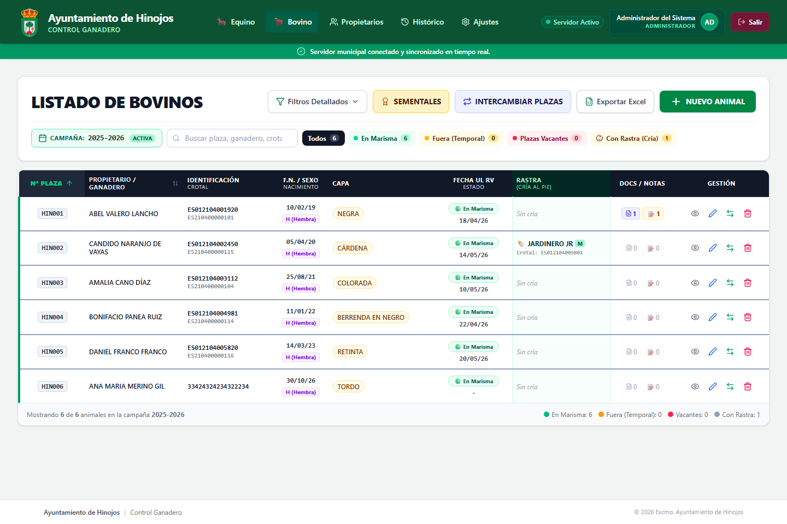
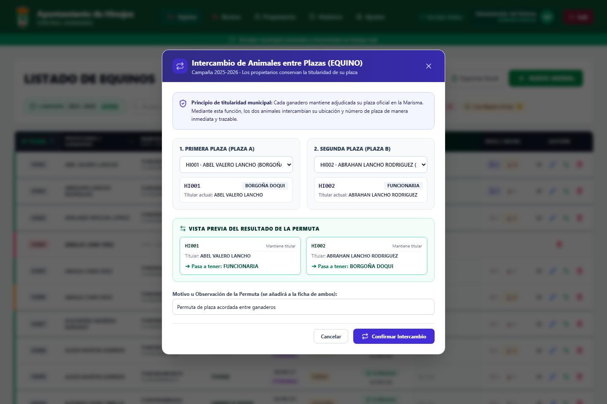
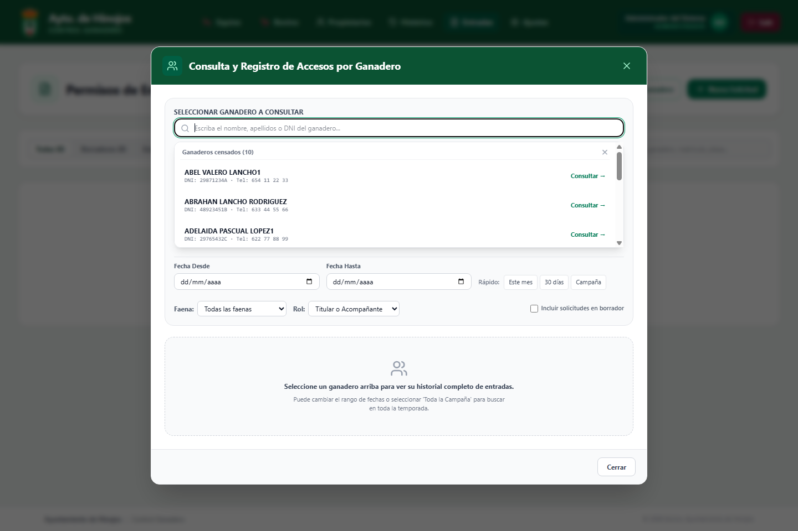
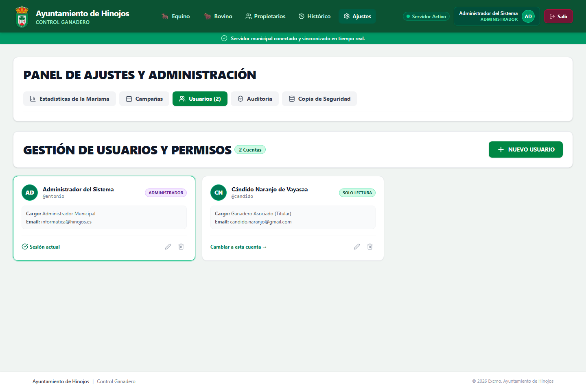
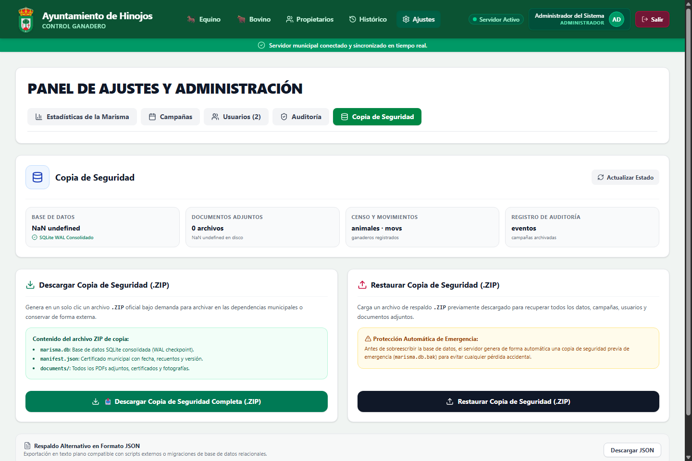

Guía Práctica e Intuitiva de Uso Diario
MANUAL DE USUARIO
Sistema de Gestión Ganadera, Censo Municipal y Permisos de Acceso
Marisma de Hinojos (Parque Nacional de Doñana)
Censo Oficial · Adjudicación de Plazas · Permisos de Entrada · Trazabilidad de Movimientos · Libros Oficiales
Índice de Contenidos del Manual de Usuario
- Introducción: ¿Qué es el Sistema de Gestión Marisma?
- Conceptos Clave que Debes Conocer Antes de Empezar
- Acceso al Sistema y Barra de Navegación Oficial (6 Pestañas)
- El Censo de Animales (Equinos y Bovinos)
- Guía Paso a Paso: Cómo Dar de Alta un Nuevo Animal
- Consulta de Ficha Oficial del Animal con Fechas Documentales e Impresión
- Trazabilidad de Movimientos: Salidas Temporales, Entradas y Bajas
- Intercambio y Permuta de Plazas entre Ganaderos
- Directorio de Ganaderos y Asociaciones (Asistente DNI Módulo 23)
- Libro Oficial de Sementales (Reproductores Autorizados)
- Módulo Oficial «Permisos de Entrada a la Marisma» (Pestaña Entradas)
- 11.1. Faenas ganaderas autorizadas (Soltar, Recoger, Repasar) y turnos oficiales.
- 11.2. Paso a paso: Cómo tramitar una nueva remesa (+ Nueva Solicitud).
- 11.3. Búsqueda asistida en censo, autocompletado y deduplicación.
- 11.4. Subida de Guías Sanitarias en PDF y vinculación a la ficha del animal.
- 11.5. Envío por correo a Doñana vs Marcar como enviado manualmente.
- 11.6. Distintivo oficial de remesa enviada:
ENVIADO [DÍA_SEMANA] DD/MM/AA.
- 11.7. Consulta de accesos por ganadero para mandos e informes a la concejalía.
- 11.8. Descarga de la hoja oficial de remesa en formato .ODS (LibreOffice Calc).
- Panel de Ajustes y Administración (Solo Administradores)
- Estadísticas de ocupación y carga ganadera real pastando.
- Gestión de campañas anuales y Asistente de Traspaso inteligente.
- Gestión de cuentas de usuarios y permisos.
- Configuración SMTP oficial para remisión de informes por correo.
- Descarga y restauración de Copias de Seguridad en archivo .ZIP en 1 clic.
- Exportación de Libros Oficiales a Excel / OpenDocument (.ODS)
- Preguntas Frecuentes y Solución de Problemas Habituales (FAQ)
1. Introducción: ¿Qué es el Sistema de Gestión Marisma?
Bienvenido al manual oficial de la aplicación Gestión Marisma 2. Este sistema ha sido desarrollado expresamente para el Ayuntamiento de Hinojos con el objetivo de gestionar y controlar de manera digital, ágil y transparente toda la actividad ganadera que se desarrolla en los terrenos comunales de la Marisma de Hinojos, dentro del entorno protegido del Parque Nacional de Doñana.
Con esta plataforma podrás consultar el censo oficial en tiempo real, asignar plazas y registrar salidas o entradas, pero además tramitar semanalmente los permisos y autorizaciones de acceso a la marisma de personas, vehículos y ganado, emitiendo de forma automática los informes oficiales para la guardería del Espacio Natural de Doñana.
2. Conceptos Clave que Debes Conocer
| Concepto |
¿Qué significa en la Marisma de Hinojos? |
| Campaña Ganadera |
Es el ejercicio anual ganadero (por ejemplo, 2025-2026). Cada campaña tiene su propio censo oficial. Cambiar de campaña en la aplicación te permite consultar años anteriores sin alterar los datos actuales. |
| Número de Plaza |
Es el identificador físico y legal adjudicado por el Ayuntamiento. Los equinos llevan el prefijo HI seguido de tres cifras (ej. HI001). Los bovinos llevan el prefijo HIN (ej. HIN001). |
| Cómputo de Cupo |
Representa el número máximo de cabezas ordinarias autorizadas a pastar. Solo descuentan plazas los animales titulares adjudicados (estén dentro o fuera temporalmente). |
| Sementales Reproductores |
Son los caballos y toros sementales aprobados para la cubrición comunal. Pastan en la marisma pero NO descuentan plazas del cupo del ganadero. |
| Rastras al pie |
Son los potros o terneros lactantes que acompañan a su madre. Mientras sean crías lactantes, tampoco descuentan plazas de cupo. |
| Bovinos sin nombre |
Por normativa zootécnica de vacuno, las vacas y toros no tienen nombre. Se identifican únicamente por su Crotal Oficial y su Plaza HINxxx. |
| Salida Temporal |
Ocurre cuando una yegua o vaca sale temporalmente de la marisma para parir, curarse o ir a feria. Su plaza queda reservada y nadie puede ocuparla. |
| Remesa de Entrada |
Conjunto de autorizaciones agrupadas para días oficiales (Miércoles/Jueves o Sábado/Domingo) para entrar a soltar, recoger o repasar ganado en Doñana. |
3. Acceso al Sistema y Barra de Navegación Oficial
3.1. Inicio de Sesión Oficial
Para acceder a la plataforma, abre tu navegador web habitual (Google Chrome, Microsoft Edge, Firefox o Safari) y entra en la dirección web facilitada por el Ayuntamiento. Te aparecerá la ventana de acceso oficial:

Figura 3.1: Pantalla oficial de inicio de sesión con validación de credenciales municipales.
1
Introduce tu Nombre de Usuario: Escribe tu usuario municipal (por ejemplo, antonio o candido).
2
Introduce tu Contraseña: Escribe tu clave secreta de acceso.
3
Pulsa «Iniciar Sesión Oficial»: El sistema verificará tus credenciales y te dará acceso inmediato a la pantalla principal.
3.2. Conociendo las 6 Pestañas de la Barra Superior
La cabecera oficial del Ayuntamiento de Hinojos cuenta con seis pestañas de acceso rápido:

Figura 3.2: Barra de navegación institucional oficial mostrando las 6 pestañas del sistema municipal.
- 🐎 Equino: Censo de yeguas, caballos y potros, fichas oficiales y sementales.
- 🐂 Bovino: Censo de ganado vacuno marismeño (identificado exclusivamente por Crotal y Plaza).
- 👥 Propietarios: Directorio de ganaderos censados, códigos REGA y asistente de DNI/CIF.
- 📜 Histórico: Libro cronológico de movimientos de campo (entradas, salidas y bajas).
- 📄 Entradas: Módulo oficial de tramitación de permisos de acceso semanal a Doñana.
- ⚙️ Ajustes: Panel administrativo (estadísticas, campañas, usuarios, SMTP y backups).
4. El Censo de Animales (Equinos y Bovinos)
Desde las pestañas Equino y Bovino puedes consultar y filtrar el censo completo de animales censados en la marisma. Cada fila muestra el número de plaza, titular, identificador, capa, estado de presencia y botones de acción.

Figura 4.1: Censo Bovino oficial. En cumplimiento de la normativa zootécnica, las vacas y toros no tienen nombre; se identifican por Crotal Oficial y Plaza HINxxx.
5. Guía Paso a Paso: Cómo Dar de Alta un Nuevo Animal

Figura 5.1: Formulario de alta con Paso 1 obligatorio para verificar duplicados y autocompletar desde el histórico.
1
Paso 1 Obligatorio (Microchip o Crotal): Escribe el identificador del animal. Si ya existe en esta campaña, el sistema te avisará en rojo para no duplicar plazas; si estuvo en campañas pasadas, ¡rellenará sus datos automáticamente!
2
Selecciona el Ganadero Titular y Plaza: Elige el ganadero oficial y comprueba el número correlativo asignado (ej. HI063 o HIN007).
3
Rellena las Características Zootécnicas: Sexo, fecha de nacimiento, capa y fecha de última revisión por la guardería.
4
Rastra (Cría al pie) y Documentos: Si tiene cría lactante, márcala en su pestaña. Sube los PDFs de pasaportes o guías sanitarias y pulsa «Registrar Animal».
6. Consulta de Ficha Oficial del Animal con Fechas Documentales
Al pulsar el icono del ojo (👁️) en cualquier animal, se abre su Ficha Oficial de Censo Ganadero:

Figura 6.1: Ficha técnica oficial mostrando pasaportes y guías sanitarias con indicación de fecha de subida (📅 DD/MM/AAAA) y botón de impresión en papel con escudo municipal.
- Fechas de Subida: Cada documento adjunto muestra claramente la fecha en que se subió al sistema (ej.
📅 15/09/2025 o 📅 19/11/2026).
- Permisos y Comunicaciones Doñana: Refleja si el animal ha participado en remesas oficiales de entrada o salida.
- Botón «Imprimir Ficha»: Genera un documento en formato papel institucional con el escudo de Hinojos listo para archivar.
7. Trazabilidad de Movimientos: Salidas Temporales y Bajas
Para registrar una salida o entrada de un animal, pulsa el botón de dos flechas (⇄) en la fila del animal:

Figura 7.1: Registro de movimiento: permite distinguir entre salida temporal (mantiene plaza reservada) y baja definitiva.
- Salida Temporal: Marca «No, mantener plaza reservada». El animal pasa a estado Fuera (Temporal), nadie puede ocupar su plaza y conserva su derecho a reingresar.
- Baja Definitiva: Marca «Sí, dejar plaza sin ocupar». La plaza pasa a ser Plaza Vacante a nombre del ganadero.
8. Intercambio y Permuta de Plazas

Figura 8.1: Permuta directa de plazas con vista previa inmediata del resultado del intercambio.
Pulsando «INTERCAMBIAR PLAZAS» puedes permutar dos animales entre dos ganaderos manteniendo cada titular su plaza oficial adjudicada.
9. Directorio de Ganaderos (Asistente DNI Módulo 23)

Figura 9.1: Directorio de ganaderos con DNI validado, REGA de explotación y recuento de cabezas.
Al dar de alta o editar un ganadero, si introduces el DNI sin letra o con una letra equivocada, el botón azul «Asignar letra oficial correcta: [X]» la corregirá matemáticamente al instante.
11. Módulo Oficial «Permisos de Entrada a la Marisma» (Pestaña Entradas)
El módulo de Entradas permite gestionar las solicitudes de acceso a la marisma para faenas ganaderas y generar semanalmente el parte oficial que se remite al Parque Nacional de Doñana.

Figura 11.1: Panel principal de Entradas a la Marisma con filtros de estado (Borradores / Enviados), buscador por titular o matrícula, botón de consulta por ganadero y creación de nuevas solicitudes.
11.1. Faenas Ganaderas y Días Oficiales de Acceso
- Faenas Autorizadas:
- SOLTAR: Entrada de animales nuevos a pastar a la marisma (requiere Guía Sanitaria en PDF).
- RECOGER: Retirada de animales de la marisma (por cura, venta o paridera).
- REPASAR: Acceso a caballo o a pie para revisar el estado del ganado en campo.
- Días Oficiales: Miércoles/Jueves y Sábado/Domingo, o Días Extraordinarios para saneamientos urgentes.
- Cupo Máximo de Seguridad: El sistema limita estrictamente a un máximo de 7 personas por remesa.
11.2. Cómo Tramitar una Nueva Solicitud de Acceso
Pulsa el botón verde «+ Nueva Solicitud»:

Figura 11.2: Formulario de solicitud de entrada: selector de días oficiales, contador de cupo en vivo, autocompletado desde el censo y opciones de guardado o envío.
1
Elige el Turno de Fechas: Pulsa "Miércoles y Jueves" o "Sábado y Domingo". El sistema calculará automáticamente las fechas exactas de la próxima semana y el título oficial para Doñana.
2
Añade los Titulares y Vehículos: Escribe el nombre del ganadero (se autocompleta con su DNI y teléfono) e indica el vehículo (ej. Todoterreno con remolque) y matrícula.
3
Selecciona la Faena y Equinos: Elige si va a Soltar, Recoger o Repasar. Al escribir el nombre o chip del animal, se autocompletará directamente desde el censo de la marisma.
4
Adjunta la Guía Sanitaria en PDF: Si la faena implica soltar o retirar ganado, sube la Guía en PDF; quedará vinculada automáticamente a la ficha del animal con su fecha de registro.
5
Finaliza la Remesa: Puedes «Guardar Borrador» para continuar más tarde, «Descargar .ODS» para revisar la hoja de cálculo, «Marcar como Enviado» (para trámites telefónicos o presenciales), o «Enviar por Correo a Doñana».
11.3. Distintivo Oficial de Remesa Enviada
Cuando una solicitud es enviada o marcada como tal, su estado cambia de BORRADOR a ENVIADO [DÍA_SEMANA] DD/MM/AA (por ejemplo: ENVIADO MARTES 17/11/26), dejando constancia oficial e inmutable del momento del trámite.
11.4. Consulta de Accesos por Ganadero («Consultar por Ganadero»)
Pulsando el botón «Consultar por Ganadero» situado en la parte superior del listado de Entradas, accederás a la herramienta de auditoría de personas:

Figura 11.3: Modal de consulta histórica de accesos por persona: permite auditar cuántas veces ha entrado un ganadero en un periodo o campaña para informar a superiores y concejalía.
- Selecciona un ganadero de la lista para ver su historial completo de accesos.
- Puedes filtrar por rangos de fechas (este mes, últimos 30 días o toda la campaña) y por tipo de faena.
- Dispones de un botón directo [Ver] para inspeccionar la solicitud completa en modo solo lectura con retorno rápido a la consulta.
12. Panel de Ajustes y Administración (Solo Administradores)
Si tienes rol de ADMINISTRADOR, tendrás acceso a la pestaña Ajustes, que reúne las herramientas de control municipal:
12.1. Estadísticas de la Marisma

Figura 12.1: Balance de plazas adjudicadas vs vacantes y animales reales pastando en la marisma.
12.2. Gestión de Campañas Anuales con Asistente de Traspaso

Figura 12.2: Listado cronológico de campañas y asistente para crear un nuevo año ganadero clonando socios y plazas en 1 clic.
12.3. Gestión de Cuentas de Usuario y Permisos

Figura 12.3: Administración de usuarios municipales con permisos de ADMINISTRADOR o CONSULTA (solo lectura).
12.4. Configuración SMTP Oficial para Salida de Correo

Figura 12.4: Configuración del servidor de correo oficial, destinatarios de Doñana, copias ocultas y prueba de envío en vivo.
Permite configurar el servidor de correo municipal desde el que se remiten los partes semanales a Doñana, con contraseña protegida bajo cifrado militar AES-256-GCM y botón de prueba de conexión en tiempo real.
12.5. Copias de Seguridad (.ZIP) en 1 Clic

Figura 12.5: Respaldo completo bajo demanda de la base de datos, documentos y fotos en un único archivo comprimido .ZIP.
13. Exportación de Libros Oficiales a Excel / OpenDocument (.ODS)
En la parte superior de las tablas de Equino, Bovino y en las Remesas de Entrada dispones del botón «Exportar Excel / Descargar .ODS»:
- Libro Oficial de Equinos (.ODS): Genera el libro maestro oficial de 4 hojas (Censo Equino, Sementales, Expediente Histórico y Libro de Movimientos).
- Censo Oficial de Bovinos (.ODS): Genera la plantilla municipal oficial de 1 hoja con todos los crotales, capas y plazas de vacuno.
- Parte Semanal de Entradas (.ODS): Genera la hoja oficial normalizada del Espacio Natural de Doñana con cabecera verde institucional, bordes completos y formato wrap en observaciones.
14. Preguntas Frecuentes y Solución de Dudas (FAQ)
¿Puedo tramitar una solicitud de entrada para una persona o caballo que no esté censado?
No. Por seguridad y cumplimiento con Doñana, los titulares y equinos deben pertenecer al censo activo de la campaña. Si un ganadero o caballo es nuevo, debes darlo de alta primero en su respectivo módulo.
¿Qué ocurre si dos ganaderos quieren entrar con el mismo vehículo el mismo día?
En el formulario puedes asignar acompañantes autorizados dentro del mismo vehículo, hasta alcanzar el cupo máximo permitido de 7 personas por remesa.
¿Cómo sé si la guardería de Doñana ha recibido el parte de entrada?
Si utilizas la opción «Enviar por Correo a Doñana», el sistema te mostrará una confirmación verde en pantalla una vez entregado por el servidor SMTP. Además, si configuraste una Copia Oculta (BCC), recibirás un duplicado idéntico en tu bandeja de entrada.
¿A quién debo acudir en caso de incidencia informática?
Para cualquier duda técnica, fallo de conexión o restablecimiento de contraseñas de usuario, ponte en contacto con el Departamento de Informática del Ayuntamiento de Hinojos o el administrador del sistema en el correo informatica@hinojos.es.